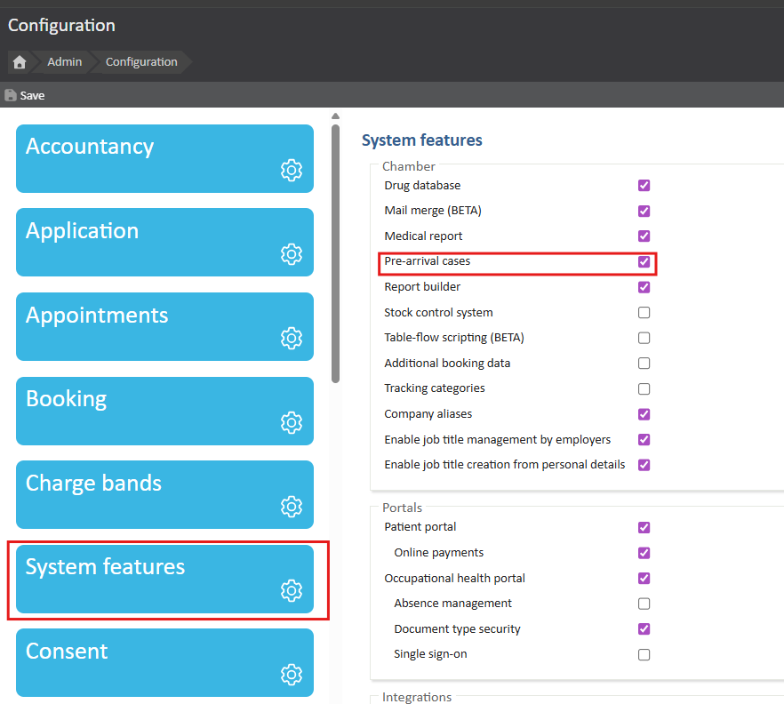

This article will explain the administration of the Pre-Arrival Cases feature and its utility in the Occupational Health space in Meddbase. This feature is required to fully utilize the Case Management workflow in OH and allows assigning OH bookings and re-assigning OH referrals to pre-existing cases and creating new cases.
The first step is the switch the Pre-arrival Cases feature on:

Once Pre-arrival Cases feature is switched on, Meddbase users will have the ability to:
1. Re-assign an Incoming OH Referral to a pre-existing Case or create a New Case.
2. Assign a pre-existing Case or create a New Case when creating an OH Referral.
3. Assign a pre-existing Case or create a New Case when booking an appointment with the OH Referral. Mandatory setting set to 'True' (ticked).
*The scenarios where this functionality is available/required are described in detail here